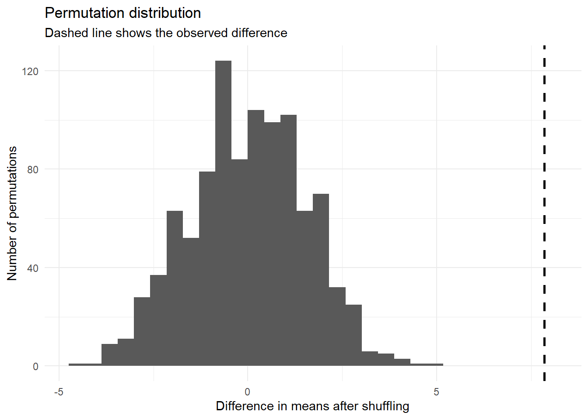
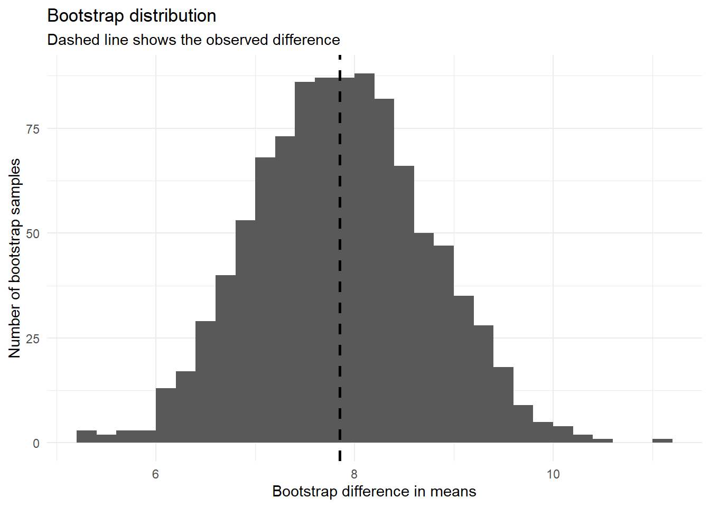
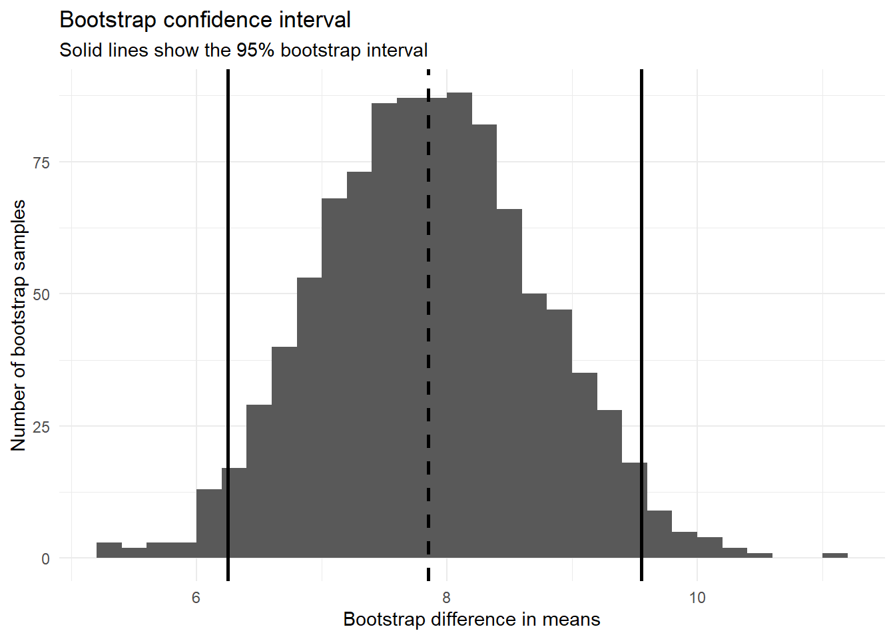

week07
Introduction
This week we will begin by playing a colour-matching game.
- A target colour appears on the left side of the screen.
- Several coloured squares appear on the right side of the screen.
- Your job is to click the square that best matches the target colour.
- After you click an answer, the game automatically moves to the next round.
- The objective is to score as many points as you can before the game ends.
There are two experimental conditions:
- Control: the answer squares are all shown at the same size.
- Distraction: the answer squares are shown in different sizes. Some are large, some are medium, and some are small.
The colour-matching task is the same in both conditions. The only difference is how the answer options are displayed. In the Distraction condition, the different square sizes may pull your attention away from the colour match.
Your tutor will assign you to either the Control group or the Distraction group. Play the game once. Record your final score and your group.
Suppose this experiment was completed with a larger sample. Download the data below and move it into your working directory.
Tasks
Part 1: Permutation tests
In the previous tutorial, we used a t-test to compare two groups. This week, we will start with a simulation-based method called a permutation test. A permutation test asks:
If the experimental condition had no effect, how unusual would our observed difference be?
If the Control and Distraction labels do not matter, then we should be able to shuffle the group labels and get results that look similar to the original data. If the observed difference is much larger than the differences we get after shuffling, then the data provide evidence against the idea that the group labels do not matter.
For this experiment, we will use the difference in sample means:
\[ \bar{x}_{Control} - \bar{x}_{Distraction} \]
A positive value means the control group scored higher on average.
Question 1
Calculate the observed difference in mean scores between the control and distraction groups.
mean_control <- colour_match |>
filter(group == ___) |>
pull(___) |>
mean()
mean_distraction <- colour_match |>
filter(group == ___) |>
pull(___) |>
mean()
observed_diff <- ___ - ___
observed_diff
Click for solution
mean_control <- colour_match |>
filter(group == "Control") |>
pull(score) |>
mean()
mean_distraction <- colour_match |>
filter(group == "Distraction") |>
pull(score) |>
mean()
observed_diff <- mean_control - mean_distraction
observed_diff[1] 7.85
Question 2
Before running a full permutation test, create one shuffled version of the dataset.
The idea is to keep the scores fixed, but randomly shuffle the group labels.
one_shuffle <- colour_match |>
mutate(
shuffled_group = sample(___)
)
one_shuffle
Click for solution
one_shuffle <- colour_match |>
mutate(
shuffled_group = sample(group)
)
one_shuffle X student_id group score shuffled_group
1 1 1 Control 35 Distraction
2 2 2 Control 31 Distraction
3 3 3 Control 29 Distraction
4 4 4 Control 34 Control
5 5 5 Control 32 Control
6 6 6 Control 28 Distraction
7 7 7 Control 36 Distraction
8 8 8 Control 33 Distraction
9 9 9 Control 30 Distraction
10 10 10 Control 34 Control
11 11 11 Control 37 Control
12 12 12 Control 31 Control
13 13 13 Control 35 Control
14 14 14 Control 29 Control
15 15 15 Control 32 Control
16 16 16 Control 34 Control
17 17 17 Control 30 Control
18 18 18 Control 33 Distraction
19 19 19 Control 36 Control
20 20 20 Control 31 Distraction
21 21 21 Distraction 27 Distraction
22 22 22 Distraction 24 Distraction
23 23 23 Distraction 22 Distraction
24 24 24 Distraction 29 Distraction
25 25 25 Distraction 25 Control
26 26 26 Distraction 20 Distraction
27 27 27 Distraction 28 Control
28 28 28 Distraction 23 Control
29 29 29 Distraction 26 Control
30 30 30 Distraction 24 Distraction
31 31 31 Distraction 21 Distraction
32 32 32 Distraction 27 Distraction
33 33 33 Distraction 25 Distraction
34 34 34 Distraction 19 Control
35 35 35 Distraction 30 Control
36 36 36 Distraction 22 Control
37 37 37 Distraction 26 Control
38 38 38 Distraction 23 Distraction
39 39 39 Distraction 28 Distraction
40 40 40 Distraction 24 Control
Question 3
Using the shuffled dataset from Question 2, calculate the difference in mean scores between the shuffled groups.
one_shuffle_diff <- one_shuffle |>
group_by(___) |>
summarise(
mean_score = mean(___)
)
shuffled_diff <- one_shuffle_diff |>
summarise(
diff = mean_score[shuffled_group == ___] -
mean_score[shuffled_group == ___]
) |>
pull(diff)
shuffled_diff
Click for solution
one_shuffle_diff <- one_shuffle |>
group_by(shuffled_group) |>
summarise(
mean_score = mean(score),
.groups = "drop"
)
one_shuffle_diff# A tibble: 2 × 2
shuffled_group mean_score
<chr> <dbl>
1 Control 29.4
2 Distraction 27.8shuffled_diff <- one_shuffle_diff |>
summarise(
diff = mean_score[shuffled_group == "Control"] -
mean_score[shuffled_group == "Distraction"]
) |>
pull(diff)
shuffled_diff[1] 1.55
Question 4
Now repeat the shuffling process 1000 times. Each time:
- shuffle the group labels;
- calculate the difference in mean scores;
- store the result.
set.seed(2420)
permutation_results <- tibble(
replicate = 1:1000
) |>
mutate(
shuffled_diff = map_dbl(replicate, function(i) {
shuffled_data <- colour_match |>
mutate(
shuffled_group = sample(___)
)
shuffled_summary <- shuffled_data |>
group_by(___) |>
summarise(
mean_score = mean(___),
.groups = "drop"
)
shuffled_summary |>
summarise(
diff = mean_score[shuffled_group == ___] -
mean_score[shuffled_group == ___]
) |>
pull(diff)
})
)
permutation_results
Click for solution
set.seed(2420)
permutation_results <- tibble(
replicate = 1:1000
) |>
mutate(
shuffled_diff = map_dbl(replicate, function(i) {
shuffled_data <- colour_match |>
mutate(
shuffled_group = sample(group)
)
shuffled_summary <- shuffled_data |>
group_by(shuffled_group) |>
summarise(
mean_score = mean(score),
.groups = "drop"
)
shuffled_summary |>
summarise(
diff = mean_score[shuffled_group == "Control"] -
mean_score[shuffled_group == "Distraction"]
) |>
pull(diff)
})
)
permutation_results# A tibble: 1,000 × 2
replicate shuffled_diff
<int> <dbl>
1 1 2.15
2 2 0.0500
3 3 1.05
4 4 2.25
5 5 0.150
6 6 -0.550
7 7 -0.850
8 8 1.95
9 9 -0.450
10 10 -0.0500
# ℹ 990 more rowsThis gives us a permutation distribution. The permutation distribution shows the kinds of differences we could get if the group labels were randomly shuffled. In other words, it shows what differences are plausible if the experimental condition had no effect.
Question 5
Visualise the permutation distribution and add a vertical line for the observed difference.
ggplot(permutation_results, aes(x = ___)) +
geom_histogram(bins = 30, boundary = 0) +
geom_vline(
xintercept = ___,
linewidth = 1,
linetype = "dashed"
) +
labs(
x = "Difference in means after shuffling",
y = "Number of permutations",
title = "Permutation distribution",
subtitle = "Dashed line shows the observed difference"
) +
theme_minimal()
Click for solution
ggplot(permutation_results, aes(x = shuffled_diff)) +
geom_histogram(bins = 30, boundary = 0) +
geom_vline(
xintercept = observed_diff,
linewidth = 1,
linetype = "dashed"
) +
labs(
x = "Difference in means after shuffling",
y = "Number of permutations",
title = "Permutation distribution",
subtitle = "Dashed line shows the observed difference"
) +
theme_minimal()
The permutation distribution should be centred near 0. This makes sense because shuffling the labels creates a world where the two groups should not differ systematically. If the dashed line is far in the right tail, then the observed difference is large compared with what we would expect from random label assignment.
Question 6
Calculate the one-sided permutation p-value.
Because our alternative hypothesis is that the control group scores higher than the distraction group, we count how often the shuffled differences are at least as large as the observed difference.
perm_p_value <- permutation_results |>
summarise(
p_value = mean(___ >= ___)
) |>
pull(p_value)
perm_p_value
Click for solution
perm_p_value <- permutation_results |>
summarise(
p_value = mean(shuffled_diff >= observed_diff)
) |>
pull(p_value)
perm_p_value[1] 0The permutation p-value estimates:
If the group labels did not matter, how often would we see a difference at least as large as the observed difference? For this dataset, the observed difference is very large, so the permutation p-value will usually be close to 0. A value of 0 does not mean the true probability is exactly zero. It means that none of the 1000 shuffled datasets produced a difference as large as the observed one. If we used more permutations, we could estimate a smaller p-value more carefully.
Part 2: Bootstrap
A permutation test helps us ask whether the observed difference would be surprising under a no-effect explanation.
A bootstrap asks a different question:
How much uncertainty is there in our estimate?
For this experiment, our estimate is the difference in mean scores (control - distraction). The bootstrap works by resampling from the observed data with replacement. This means some students may appear more than once in a bootstrap sample, while others may not appear at all. For comparing two groups, we resample within each group. This keeps the group sizes the same and preserves the idea that the control and distraction groups are separate samples.
Question 8
Create one bootstrap sample from the control group and one bootstrap sample from the distraction group.
control_scores <- colour_match |>
filter(group == ___) |>
pull(___)
distraction_scores <- colour_match |>
filter(group == ___) |>
pull(___)
control_boot <- sample(
x = ___,
size = length(___),
replace = ___
)
distraction_boot <- sample(
x = ___,
size = length(___),
replace = ___
)
control_boot
distraction_boot
Click for solution
control_scores <- colour_match |>
filter(group == "Control") |>
pull(score)
distraction_scores <- colour_match |>
filter(group == "Distraction") |>
pull(score)
control_boot <- sample(
x = control_scores,
size = length(control_scores),
replace = TRUE
)
distraction_boot <- sample(
x = distraction_scores,
size = length(distraction_scores),
replace = TRUE
)
control_boot [1] 34 31 37 31 34 28 29 33 29 31 32 32 29 31 28 30 28 34 28 36distraction_boot [1] 28 23 29 27 25 21 24 29 25 27 29 22 23 21 25 19 23 25 26 20This creates one bootstrap sample for each group. Because we used replace = TRUE, the same score can appear multiple times in a bootstrap sample. This is how the bootstrap mimics the idea of taking new samples from a population.
Question 9
Calculate the difference in means for the one bootstrap sample from Question 8.
one_boot_diff <- mean(___) - mean(___)
one_boot_diff
Click for solution
one_boot_diff <- mean(control_boot) - mean(distraction_boot)
one_boot_diff[1] 6.7This is one bootstrap estimate of the difference in mean scores. It will usually be close to the observed difference, but not exactly the same. That variation is what the bootstrap is trying to measure.
Question 10
Repeat the bootstrap process 1000 times.
Each time:
- resample control scores with replacement;
- resample distraction scores with replacement;
- calculate the difference in means.
set.seed(5242)
bootstrap_results <- tibble(
replicate = 1:1000
) |>
mutate(
boot_diff = map_dbl(replicate, function(i) {
control_boot <- sample(
x = ___,
size = length(___),
replace = ___
)
distraction_boot <- sample(
x = ___,
size = length(___),
replace = ___
)
mean(___) - mean(___)
})
)
bootstrap_results
Click for solution
set.seed(5242)
bootstrap_results <- tibble(
replicate = 1:1000
) |>
mutate(
boot_diff = map_dbl(replicate, function(i) {
control_boot <- sample(
x = control_scores,
size = length(control_scores),
replace = TRUE
)
distraction_boot <- sample(
x = distraction_scores,
size = length(distraction_scores),
replace = TRUE
)
mean(control_boot) - mean(distraction_boot)
})
)
bootstrap_results# A tibble: 1,000 × 2
replicate boot_diff
<int> <dbl>
1 1 8.35
2 2 5.5
3 3 7.85
4 4 7.4
5 5 8.25
6 6 7.1
7 7 8.4
8 8 7.6
9 9 6.9
10 10 8.15
# ℹ 990 more rowsThis gives us a bootstrap distribution of the estimated difference in means. Unlike the permutation distribution, the bootstrap distribution should be centred near the observed difference. That is because the bootstrap is not simulating a world where there is no effect. It is simulating repeated samples from something like the population that produced our data.
Question 11
Visualise the bootstrap distribution and add a vertical line for the observed difference.
ggplot(bootstrap_results, aes(x = ___)) +
geom_histogram(bins = 30, boundary = 0) +
geom_vline(
xintercept = ___,
linewidth = 1,
linetype = "dashed"
) +
labs(
x = "Bootstrap difference in means",
y = "Number of bootstrap samples",
title = "Bootstrap distribution",
subtitle = "Dashed line shows the observed difference"
) +
theme_minimal()
Click for solution
ggplot(bootstrap_results, aes(x = boot_diff)) +
geom_histogram(bins = 30, boundary = 0) +
geom_vline(
xintercept = observed_diff,
linewidth = 1,
linetype = "dashed"
) +
labs(
x = "Bootstrap difference in means",
y = "Number of bootstrap samples",
title = "Bootstrap distribution",
subtitle = "Dashed line shows the observed difference"
) +
theme_minimal()
Question 12
Calculate a 95% bootstrap confidence interval using the percentile method.
bootstrap_ci <- bootstrap_results |>
summarise(
lower = quantile(___, probs = ___),
upper = quantile(___, probs = ___)
)
bootstrap_ci
Click for solution
bootstrap_ci <- bootstrap_results |>
summarise(
lower = quantile(boot_diff, probs = 0.025),
upper = quantile(boot_diff, probs = 0.975)
)
bootstrap_ci# A tibble: 1 × 2
lower upper
<dbl> <dbl>
1 6.25 9.55
Question 13
Add the bootstrap confidence interval to the bootstrap plot.
ggplot(bootstrap_results, aes(x = ___)) +
geom_histogram(bins = 30, boundary = 0) +
geom_vline(
xintercept = ___,
linewidth = 1,
linetype = "dashed"
) +
geom_vline(
xintercept = c(bootstrap_ci$___, bootstrap_ci$___),
linewidth = 1
) +
labs(
x = "Bootstrap difference in means",
y = "Number of bootstrap samples",
title = "Bootstrap confidence interval",
subtitle = "Solid lines show the 95% bootstrap interval"
) +
theme_minimal()
Click for solution
ggplot(bootstrap_results, aes(x = boot_diff)) +
geom_histogram(bins = 30, boundary = 0) +
geom_vline(
xintercept = observed_diff,
linewidth = 1,
linetype = "dashed"
) +
geom_vline(
xintercept = c(bootstrap_ci$lower, bootstrap_ci$upper),
linewidth = 1
) +
labs(
x = "Bootstrap difference in means",
y = "Number of bootstrap samples",
title = "Bootstrap confidence interval",
subtitle = "Solid lines show the 95% bootstrap interval"
) +
theme_minimal()
The dashed line shows the observed estimate. The solid lines show the lower and upper endpoints of the 95% bootstrap confidence interval.
Homework
Prepare a Quarto document that compares the two methods (permutation tests and bootstrap). In you report bes ure to answer the following:
- Which method was used to calculate a p-value?
- Which method was used to calculate a confidence interval?
- Which distribution was centred near 0?
- Which distribution was centred near the observed difference?
- Do the two methods tell a similar story for this dataset?